Nope Rope
The day I accidentally found myself far too close to something with opinions and fangs...
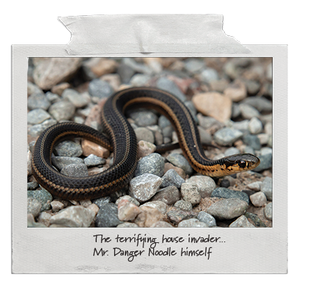
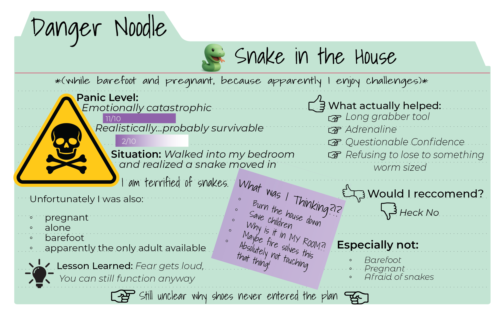
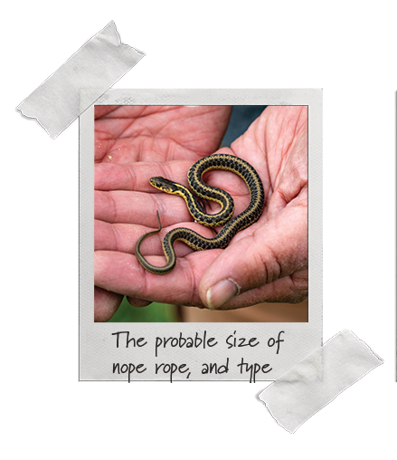
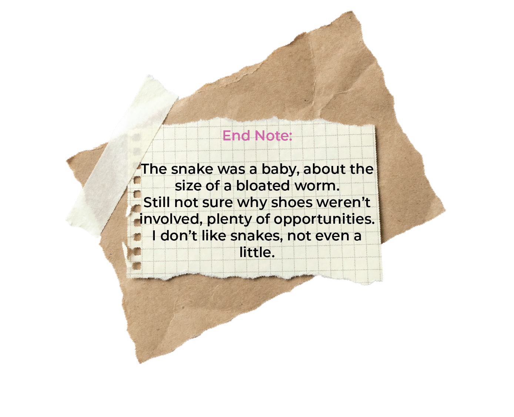
The Badger
The time my dinner guest had longer nails than me, and hissed louder than my cat getting a bath.
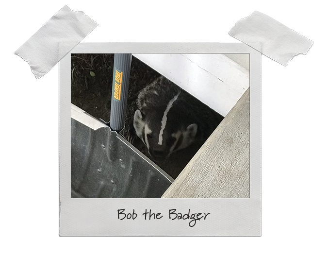
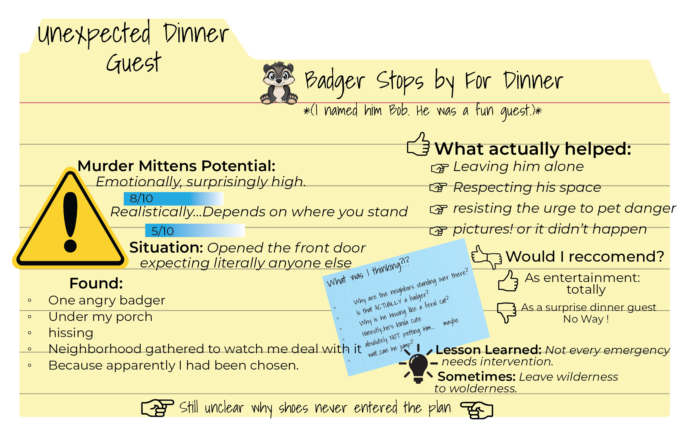
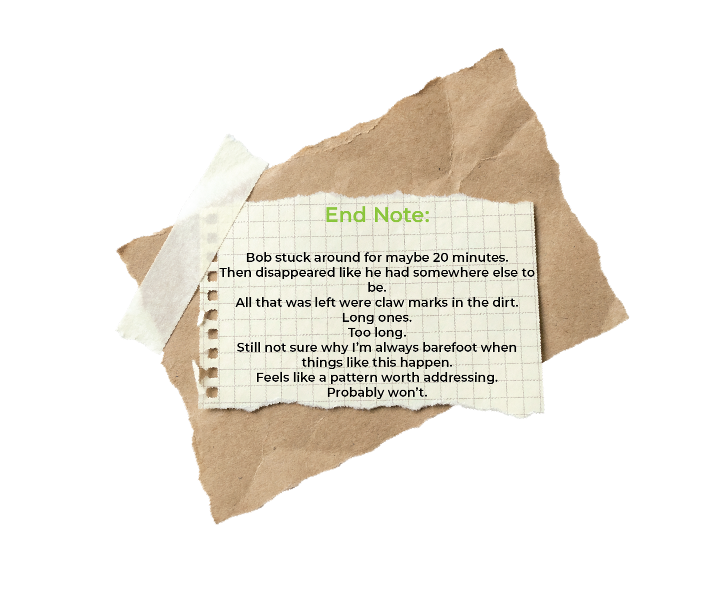
The Navy Seal
That time I reacted first, found out the consequences later.
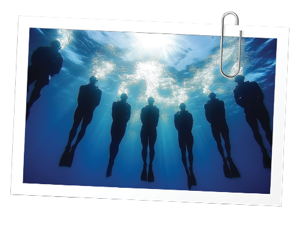
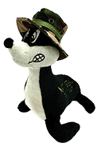
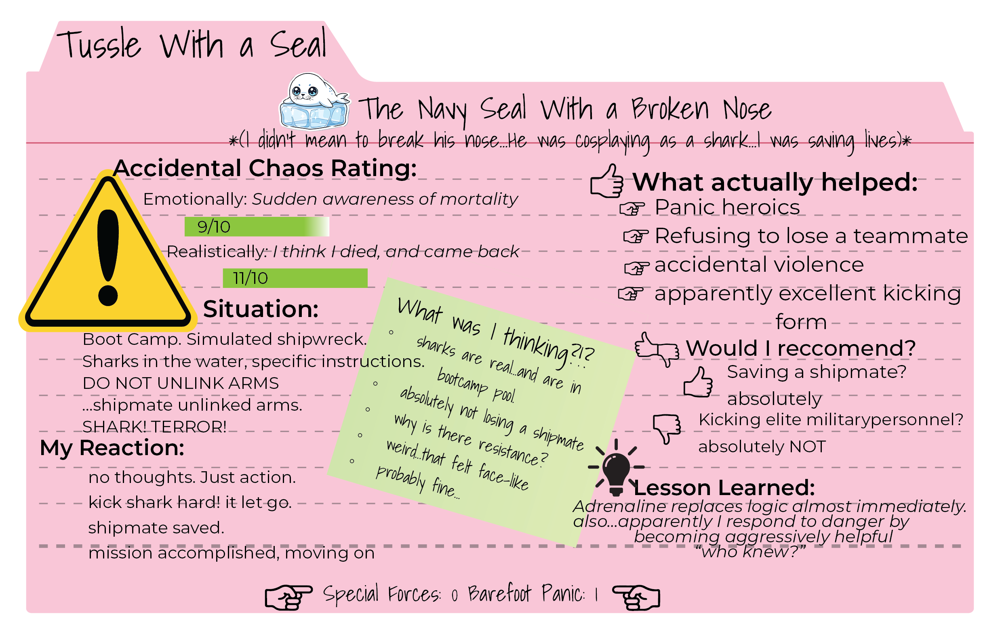
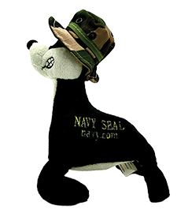
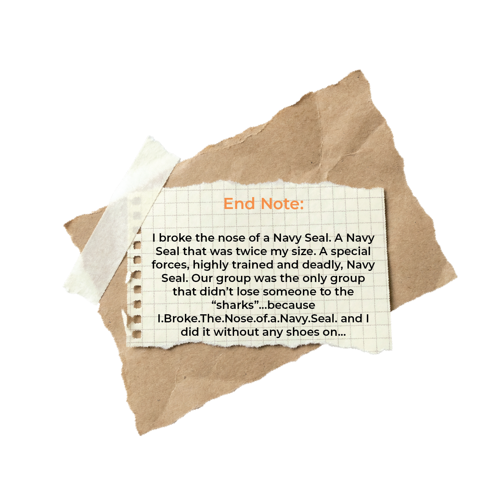
Bucky the Eel
Bucky's first, but definitely not last, escape attempt.
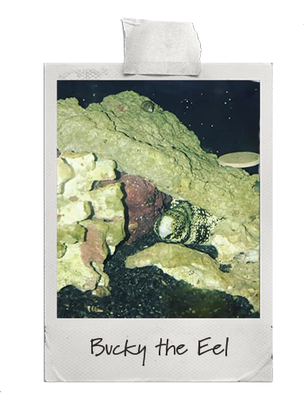
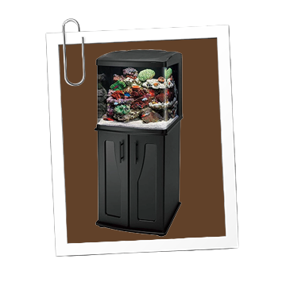
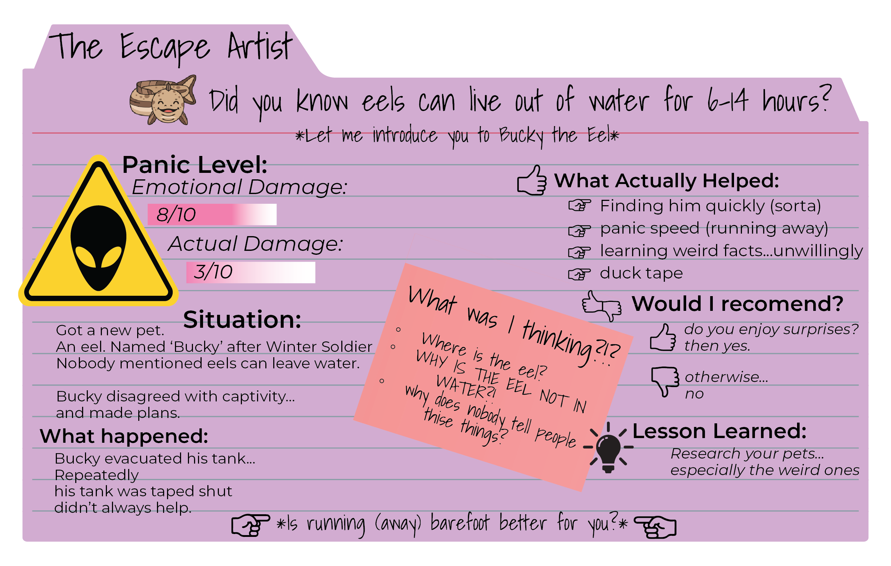
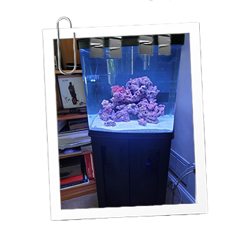
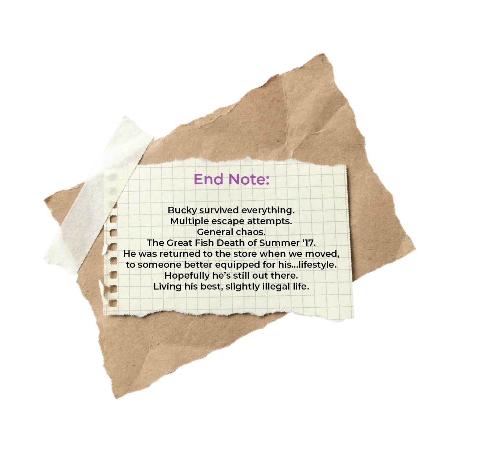
Hard as Glass
The time the butter dish exploded, because I didn't want to sit and eat anyway.
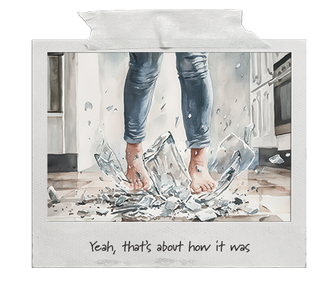
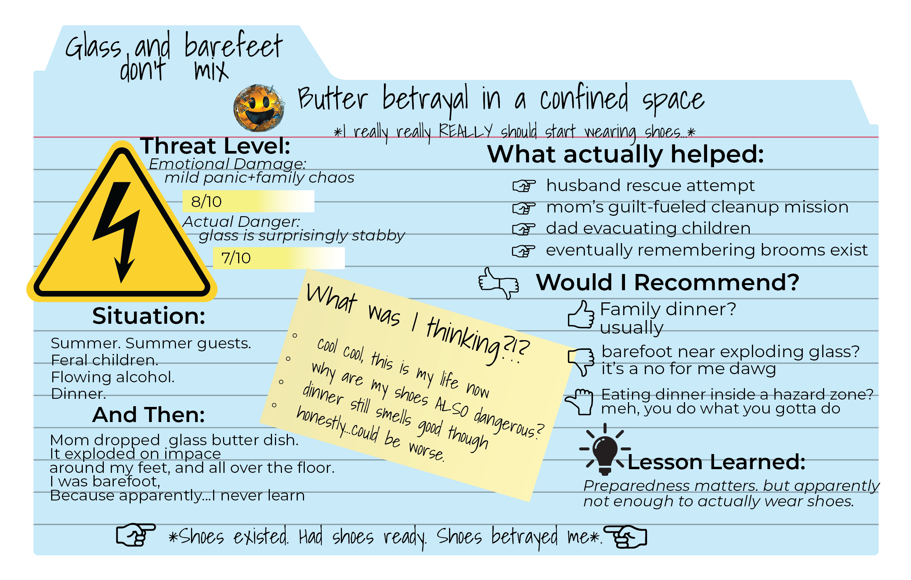
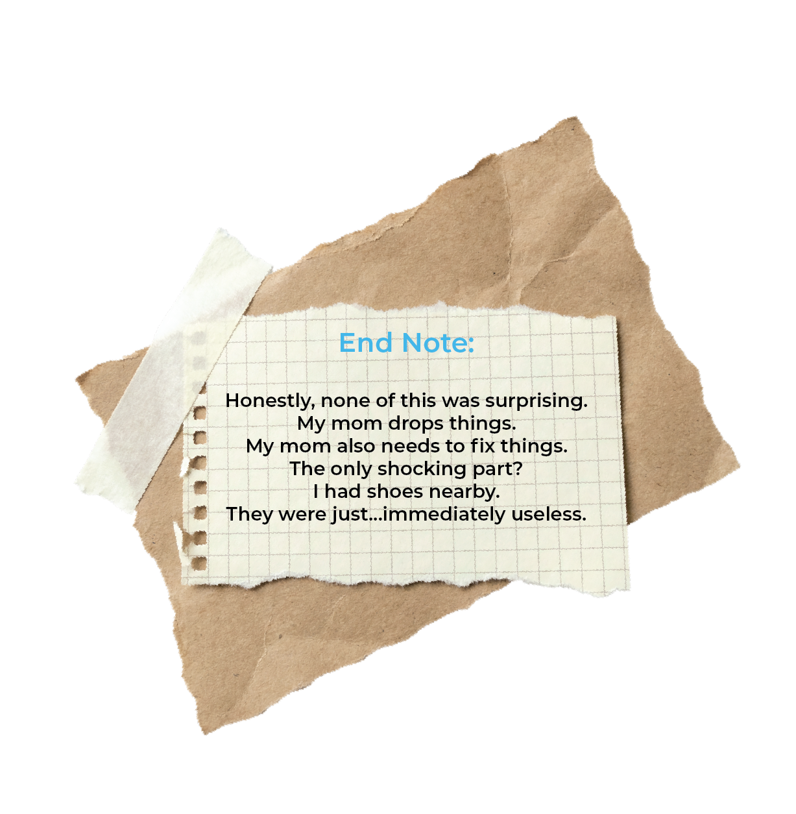
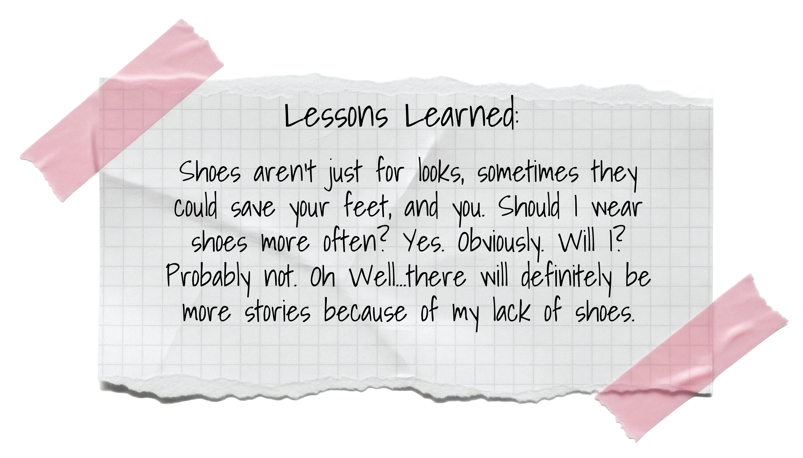